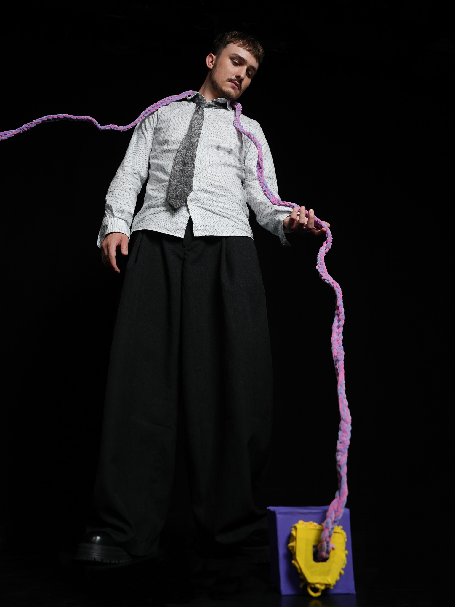
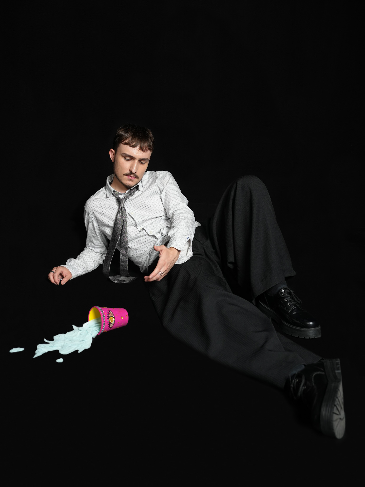
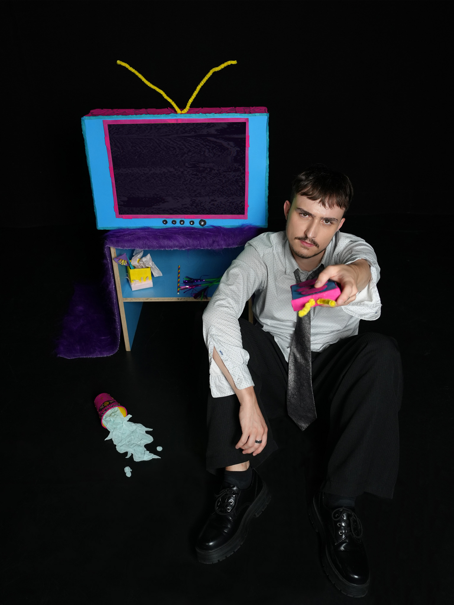
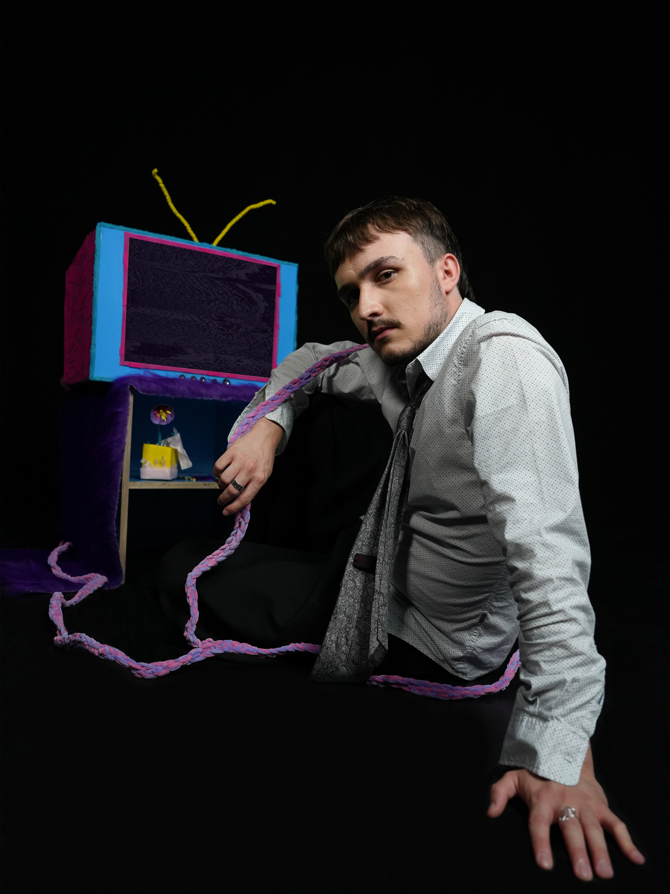

MUSICVIDEO FLICKERING LIGHTS
A music video produced by 8 multimedia production students including myself. During filming, I was responsible for operating the camera as well as the styling of the artist. To promote the new song and music video, I took and edited pictures and which the artist used for instagram, spotify and tiktok.



